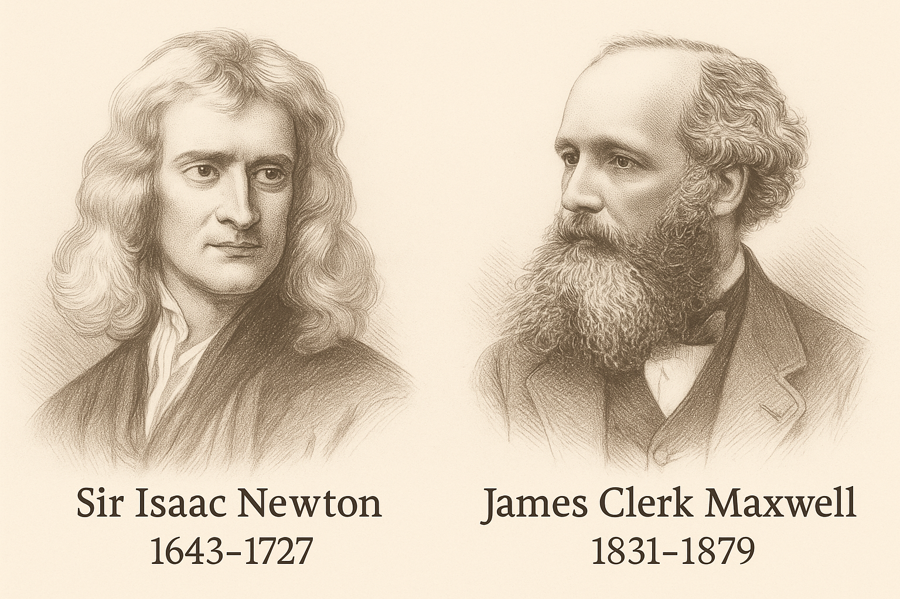
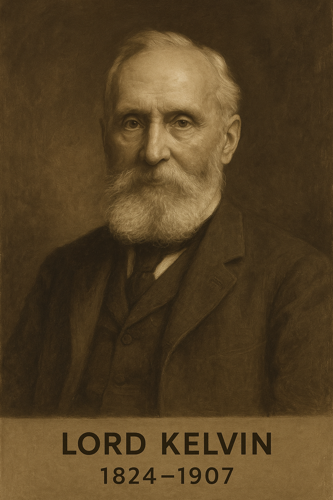
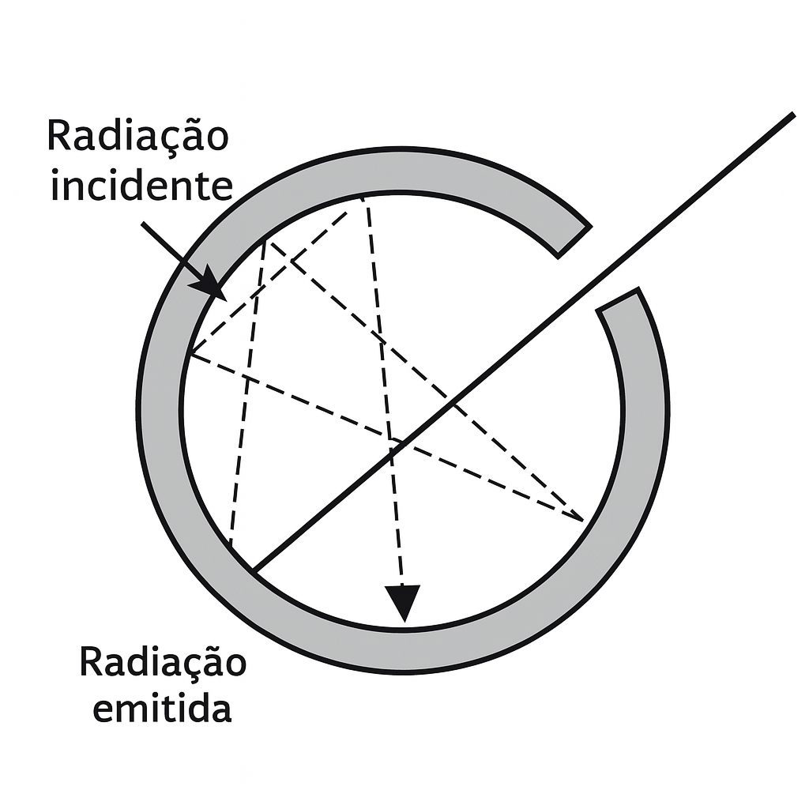
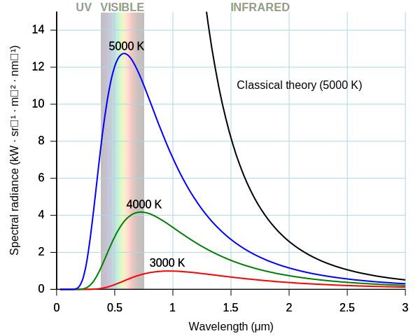
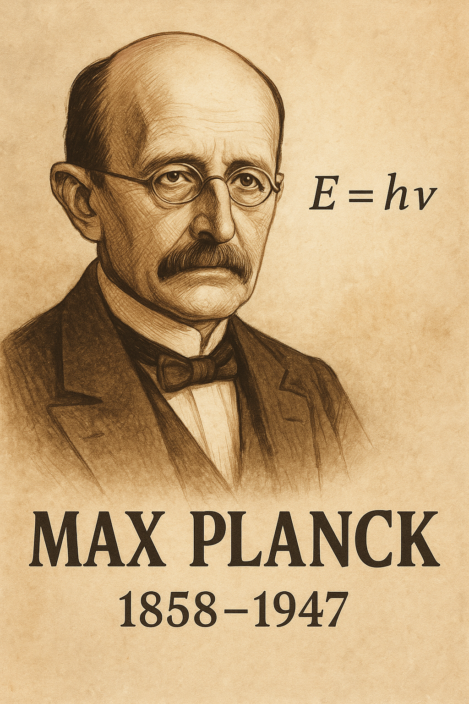
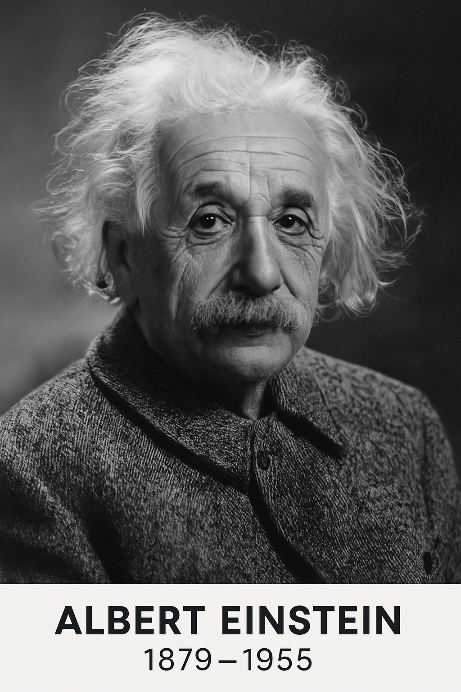
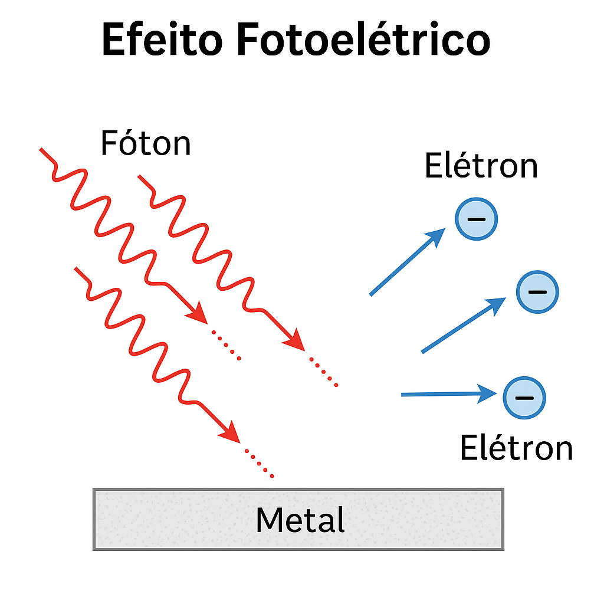
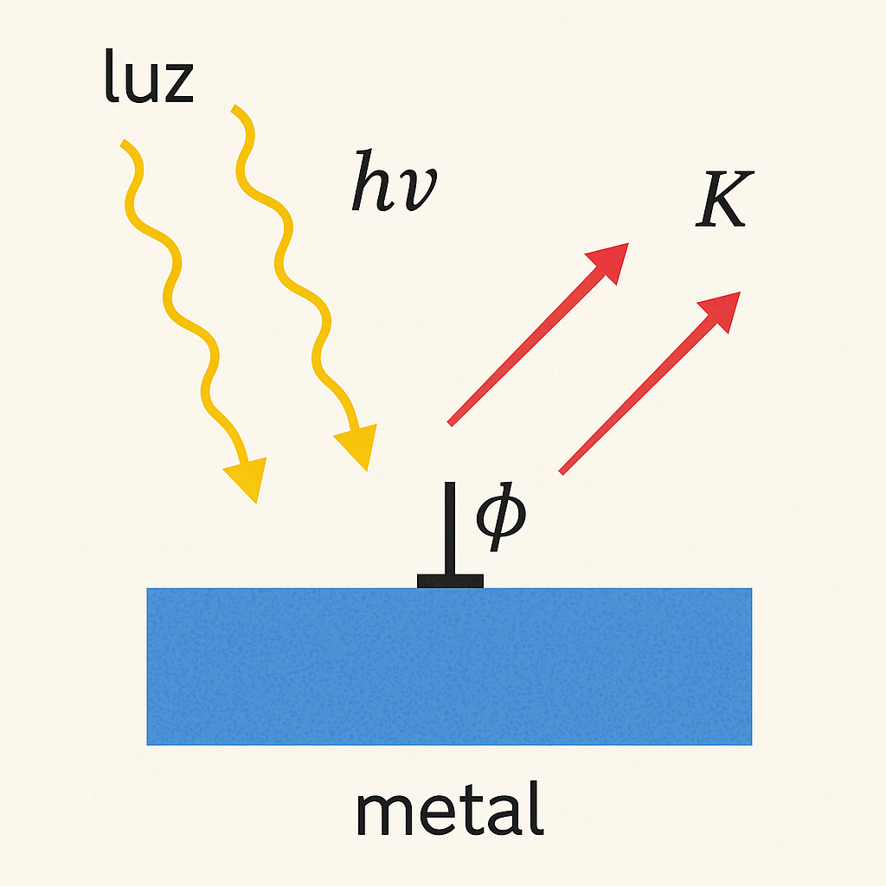
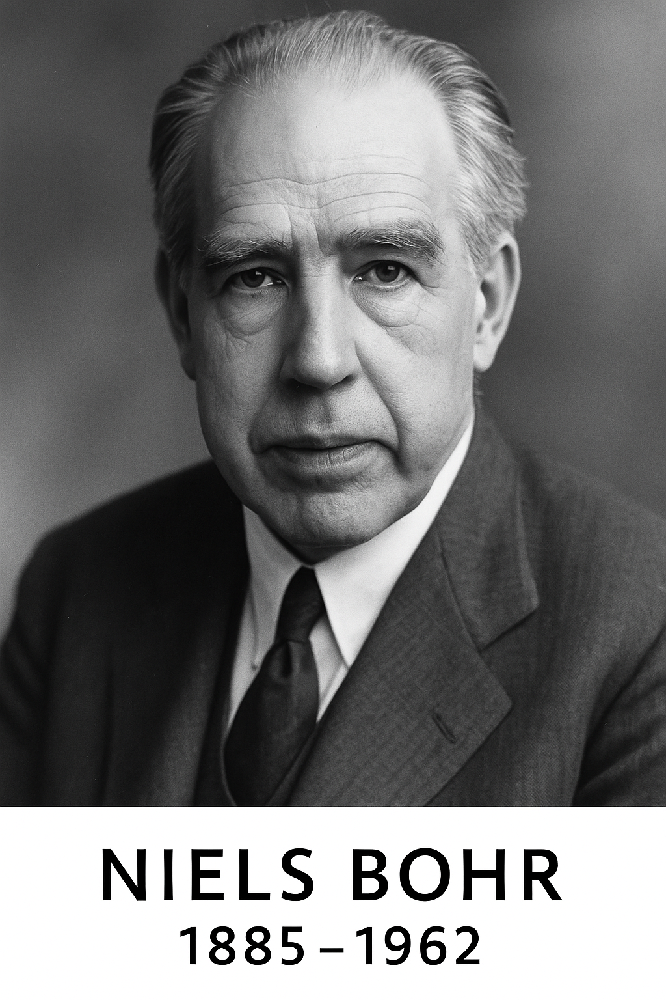
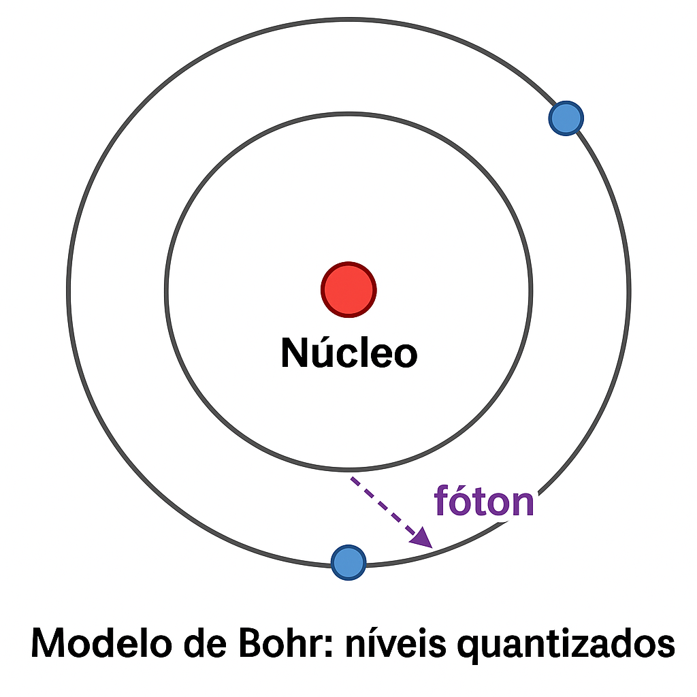

1 📚 🧬 Parte 1 — Antes da Revolução Quântica (Aprofundamento)
Série especial sobre os 100 anos da Mecânica Quântica. Parte 1: Antes da Revolução Quântica.
1.1 Antes da Revolução Quântica
Este post faz parte da série especial “100 Anos da Mecânica Quântica”.
1.2 Introdução
No final do século XIX, a física parecia completa. As equações de Newton descreviam com precisão o movimento de corpos — desde a queda de uma maçã até a órbita dos planetas — com base em forças e acelerações. A dinâmica clássica se apoiava nas leis do movimento:
E, especialmente, na lei da gravitação universal, que descrevia a atração entre massas:
\[
F = G \cdot \frac{m_1 m_2}{r^2}
\]
Enquanto isso, James Clerk Maxwell havia consolidado o conhecimento sobre eletricidade e magnetismo nas equações de Maxwell, que descrevem como campos elétricos e magnéticos se inter-relacionam e se propagam:
\[
\begin{aligned}
&\text{(1) Gauss para o elétrico:} && \nabla \cdot \vec{E} = \frac{\rho}{\varepsilon_0} \\
&\text{(2) Gauss para o magnético:} && \nabla \cdot \vec{B} = 0 \\
&\text{(3) Lei de Faraday:} && \nabla \times \vec{E} = -\frac{\partial \vec{B}}{\partial t} \\
&\text{(4) Lei de Ampère-Maxwell:} && \nabla \times \vec{B} = \mu_0 \vec{J} + \mu_0 \varepsilon_0 \frac{\partial \vec{E}}{\partial t}
\end{aligned}
\]
Essas equações não só explicavam os fenômenos eletromagnéticos como também previam a existência de ondas eletromagnéticas, cuja velocidade coincidia com a da luz. Isso levou à interpretação revolucionária de que a luz é uma onda eletromagnética.

Retratos de Isaac Newton e James Clerk Maxwell
Figura: Sir Isaac Newton (1643–1727) e James Clerk Maxwell (1831–1879) — dois pilares da física clássica.
A harmonia entre essas leis — a mecânica de Newton e o eletromagnetismo de Maxwell — dava aos cientistas da época a sensação de que o universo era completamente compreendido.
Em 1900, Lord Kelvin afirmou que os fundamentos da física estavam estabelecidos, restando apenas duas pequenas nuvens no horizonte — referindo-se a pequenas discrepâncias experimentais.
Essas “nuvens”, no entanto, anunciavam uma tempestade teórica que alteraria para sempre nossa compreensão da realidade.
1.3 🌥️ As “duas nuvens” de Lord Kelvin (1900)

Retrato de Lord Kelvin (1824–1907)
Figura: Lord Kelvin (William Thomson), físico escocês conhecido por suas contribuições à termodinâmica e por identificar, em 1900, duas “pequenas nuvens” no horizonte da física. Essas nuvens seriam o prenúncio das maiores revoluções científicas do século XX.
Em uma palestra na Royal Institution em 27 de abril de 1900, o físico britânico Lord Kelvin afirmou que havia apenas “duas pequenas nuvens no horizonte da física”:
“Nuvens no horizonte da física”
— Lord Kelvin, 1900
1.3.1 ☁️ Primeira nuvem: a radiação do corpo negro
“A falha da teoria para explicar a distribuição da energia da radiação térmica.”
Esse era o problema que hoje chamamos de catástrofe do ultravioleta:
A lei de Rayleigh–Jeans, derivada da física clássica, previa que a energia irradiada por um corpo negro crescia indefinidamente com a frequência.
A experiência mostrava o contrário: a energia cresce, atinge um pico, e depois decai em altas frequências.
Kelvin percebeu que esse desvio não era trivial — mas não imaginava que exigiria abandonar o paradigma da energia contínua.
Essa “nuvem” foi dissipada por Planck, com sua hipótese da quantização da energia (1900).
🔁 Essa é a origem da mecânica quântica.
1.3.2 ☁️ Segunda nuvem: o éter luminífero e a transformação de Lorentz
“A inconsistência entre as equações de Maxwell e a ausência de detecção do éter.”
Na época, acreditava-se que a luz precisava de um meio para se propagar: o chamado éter luminífero.
As equações de Maxwell previam a velocidade da luz \(c\), mas não deixavam claro em qual referencial essa velocidade era válida.
O experimento de Michelson–Morley (1887) mostrou que não era possível detectar o movimento da Terra em relação ao éter.
Isso colocava em dúvida toda a mecânica clássica, baseada em referenciais absolutos.
A “nuvem” só foi dissipada quando Einstein propôs a Teoria da Relatividade Restrita (1905), eliminando o éter e postulando que a velocidade da luz é a mesma para todos os referenciais inerciais.
🔁 Essa é a origem da relatividade restrita.
1.3.3 🧠 Resumo
☁️ Nuvem
Problema
Solução histórica
Nova teoria
Radiação térmica
Divergência nas altas frequências
Quantização da energia (Planck, 1900)
Mecânica Quântica
Éter e velocidade da luz
Falha na detecção do éter
Postulados de Einstein (1905)
Relatividade Restrita
1.4 A Catástrofe do Ultravioleta
No final do século XIX, um dos grandes desafios da física teórica era entender como objetos aquecidos — chamados corpos negros — emitem radiação térmica. Um corpo negro é um objeto idealizado que absorve toda a radiação incidente e reemite energia em função apenas de sua temperatura.

Modelo idealizado de um corpo negro
Figura: Modelo idealizado de um corpo negro: uma cavidade com paredes internas refletoras e uma pequena abertura. A radiação que entra pela abertura sofre múltiplas reflexões no interior da cavidade, sendo quase totalmente absorvida. A radiação emitida pela fenda representa com alta precisão o espectro da radiação de corpo negro. Esse modelo foi fundamental para os experimentos que levaram ao nascimento da mecânica quântica.
O problema era descrever com precisão a distribuição da energia emitida em diferentes frequências (ou comprimentos de onda). A física clássica, utilizando a teoria do eletromagnetismo e a estatística de Boltzmann, levou à chamada lei de Rayleigh–Jeans, que previa:
\[
E(\nu, T) \propto \nu^2 \cdot kT
\]
onde:
\(\nu\) é a frequência da radiação,
\(k\) é a constante de Boltzmann,
\(T\) é a temperatura do corpo.
Essa expressão funciona bem para frequências baixas (infravermelho), mas apresenta um problema grave em altas frequências: ela cresce indefinidamente à medida que \(\nu \to \infty\). Isso implicaria que um corpo negro emitiria energia infinita — um absurdo físico.
Esse impasse ficou conhecido como a catástrofe do ultravioleta. O termo foi cunhado porque o erro da teoria clássica se tornava dramático na região ultravioleta do espectro eletromagnético, onde a energia predita divergia totalmente das observações experimentais.
1.4.1 🔬 Evidência experimental vs. teoria clássica
Os experimentos com cavidades de corpo negro mostravam um comportamento muito diferente. A energia emitida crescia até certo ponto, atingia um pico e depois caía rapidamente em frequências altas. A curva observada era semelhante a esta:

Gráfico da radiação do corpo negro e a catástrofe do ultravioleta
Figura: A catástrofe do ultravioleta é o erro da teoria clássica ao prever que a radiação de um corpo negro aumenta sem limite em frequências altas. No gráfico, a curva preta mostra essa previsão (lei de Rayleigh–Jeans), enquanto a curva azul representa os dados reais, explicados corretamente pela teoria de Planck.
1.4.2 🧠 Uma crise conceitual
Esse problema não era apenas técnico — era conceitual. Se a física clássica falhava em algo tão fundamental como a radiação térmica, talvez seus próprios alicerces estivessem incompletos. A solução exigiria abandonar a suposição de continuidade da energia.
Esse momento marcou o início de uma profunda revolução no pensamento físico. Em 1900, Max Planck ousaria uma hipótese radical: a energia só podia ser emitida em quantidades discretas, ou quanta. Essa ideia daria origem a toda a estrutura da mecânica quântica.
1.5 A Quantização de Planck
Em 1900, diante do impasse da radiação do corpo negro, Max Planck propôs uma solução revolucionária — embora ele mesmo não tivesse plena consciência da profundidade de sua proposta. Para ajustar a curva de emissão aos dados experimentais, Planck introduziu uma hipótese radical: a energia não pode ser emitida de forma contínua, mas sim em múltiplos discretos de uma quantidade elementar.
Essa quantidade elementar de energia é proporcional à frequência da radiação:
\[
E = h \cdot \nu
\]
onde:
\(E\) é a energia do quantum de radiação,
\(\nu\) é a frequência da radiação,
\(h\) é a constante de Planck, introduzida por ele: \[
h = 6{,}626 \times 10^{-34} \ \text{J·s}
\]
Planck obteve essa fórmula ajustando a distribuição de energia emitida por um corpo negro a partir de princípios estatísticos e termodinâmicos. A nova lei de Planck para a densidade espectral de energia é:
Para baixas frequências (\(h\nu \ll kT\)), ela se aproxima da fórmula de Rayleigh–Jeans.
Para altas frequências (\(h\nu \gg kT\)), o termo exponencial domina, e a energia tende a zero, como observado experimentalmente.
1.5.1 🔍 A revolução disfarçada
Curiosamente, Planck considerava sua proposta um “truque matemático”. Ele mesmo era cético quanto à ideia de que a energia fosse de fato quantizada na natureza. Ainda assim, sua fórmula funcionava — com precisão surpreendente.
Com isso, surgia a primeira expressão física envolvendo a constante \(h\), que mais tarde se tornaria o símbolo universal da mecânica quântica.
Você sabia?
Planck só adotou a quantização como última alternativa, pois tentou, sem sucesso, justificar os dados com métodos clássicos. Sua hesitação inicial é um exemplo de como as maiores revoluções científicas às vezes surgem a contragosto.
“Foi uma questão de desespero. Eu estava tentando ajustar os dados e tive que inventar algo completamente novo.”
— Max Planck (relato retrospectivo sobre 1900)

Retrato de Max Planck
Figura: Max Planck (1858–1947), o físico que propôs a quantização da energia e deu origem à constante \(h\). A fórmula \(E = h \nu\) tornou-se o alicerce da física quântica.
Dica🔬 O “truque matemático” de Planck — a revolução discreta via séries
Para resolver a crise da radiação do corpo negro, Max Planck propôs em 1900 uma hipótese ousada: a energia dos osciladores que compõem a radiação térmica só poderia ser emitida em quantidades discretas, chamadas quanta:
\[
E_n = n h \nu, \quad \text{com } n = 0, 1, 2, \dots
\]
1.5.2 🧱 Modelo físico: osciladores quantizados
Planck imaginou que a radiação era produzida por osciladores harmônicos — pequenas cargas elétricas vibrando nas paredes da cavidade. Na física clássica, esses osciladores poderiam ter qualquer energia contínua. Planck, no entanto, propôs:
⚠️ A energia de cada oscilador não varia de forma contínua, mas apenas em múltiplos inteiros de uma quantidade elementar \(h \nu\).
💡 Nota: Planck modelou os constituintes da cavidade como osciladores harmônicos clássicos — ou seja, pequenas cargas elétricas vibrando sob forças restauradoras (como elétrons presos em ligações). Esses osciladores absorvem e emitem radiação eletromagnética, e sua distribuição estatística de energia foi a base para a dedução da fórmula da radiação do corpo negro. Essa idealização era compatível com os conhecimentos da época e essencial para introduzir a quantização de energia.
1.5.3 📊 Entropia e estatística de Boltzmann
1.5.3.1 📊 A fórmula \(S = k \ln W\) e sua aplicação por Planck
Para deduzir sua fórmula da radiação do corpo negro, Max Planck utilizou um conceito-chave da mecânica estatística: a relação entre entropia e número de microestados, proposta por Ludwig Boltzmann:
\[
S = k \ln W
\]
Essa equação relaciona:
\(S\): a entropia de um sistema — uma medida da desordem ou da quantidade de possibilidades microscópicas para um mesmo estado macroscópico;
\(k\): a constante de Boltzmann, \(k = 1{,}38 \times 10^{-23} \ \text{J/K}\);
\(W\): o número de microestados possíveis — isto é, quantas maneiras os quanta de energia podem ser distribuídos entre os osciladores do sistema.
A função logarítmica garante que a entropia seja proporcional ao tamanho do sistema: dobrar o número de microestados dobra \(\ln W\), mas não multiplica diretamente \(W\).
1.5.4 🧠 Como Planck usou isso?
Planck assumiu que a energia era composta por múltiplos discretos de \(h \nu\). Ele então calculou:
Quantas maneiras \(W\) havia de distribuir os \(n\) quanta de energia entre \(N\) osciladores;
Aplicou a relação de Boltzmann para obter a entropia do sistema: \(S = k \ln W\);
Relacionou entropia e temperatura pela identidade termodinâmica \(\frac{dS}{dE} = \frac{1}{T}\);
Obteve, por fim, a energia média\(\langle E \rangle\), que leva à fórmula correta da radiação térmica.
Essa foi a primeira vez em que se aplicou estatística com energia quantizada — e o início da transição da física clássica para a mecânica quântica.
A inovação estava em como contar \(W\): assumindo que a energia total era composta por \(n\) quanta \(h\nu\), ele utilizou combinatória estatística para determinar a energia média dos osciladores:
\[
\langle E \rangle = \frac{\sum\limits_{n=0}^\infty E_n e^{-E_n / kT}}{\sum\limits_{n=0}^\infty e^{-E_n / kT}} = \frac{\sum\limits_{n=0}^\infty n h \nu \cdot e^{-n h \nu / kT}}{\sum\limits_{n=0}^\infty e^{-n h \nu / kT}}
\]
Com \(x = e^{-h \nu / kT}\), isso vira:
\[
\langle E \rangle = h \nu \cdot \frac{\sum\limits_{n=0}^\infty n x^n}{\sum\limits_{n=0}^\infty x^n}
\]
Aplicando as séries geométricas conhecidas:
\(\sum_{n=0}^{\infty} x^n = \frac{1}{1 - x}\)
\(\sum_{n=0}^{\infty} n x^n = \frac{x}{(1 - x)^2}\)
Obtemos:
\[
\langle E \rangle = h \nu \cdot \frac{x}{1 - x} = \frac{h \nu}{e^{h \nu / kT} - 1}
\]
1.5.5 📈 A fórmula final: lei de Planck
Multiplicando a energia média pelo número de modos \(\propto \nu^2\), Planck chegou à fórmula completa da radiação do corpo negro:
Essa fórmula corrige a divergência da lei de Rayleigh–Jeans e coincide perfeitamente com os dados experimentais.
1.5.6 📌 Resumo do “truque”:
Hipótese: energia quantizada \(E = n h \nu\)
Cálculo: estatística de Boltzmann com contagem discreta
Resultado: energia média correta
Conclusão: fórmula da radiação do corpo negro validada experimentalmente
1.5.7 🧠 Reflexão
“Planck tratou a quantização como um artifício matemático para ajustar os dados. Ele não acreditava que os osciladores físicos tivessem realmente energia discreta.
Mas Einstein, pouco depois, levaria essa ideia a sério — e mostraria que a luz realmente se comporta como partícula.”
“Foi uma questão de desespero. Eu estava tentando ajustar os dados e tive que inventar algo completamente novo.”
— Max Planck
Na próxima seção, veremos como Einstein levou a ideia de Planck a sério — aplicando a quantização da luz para explicar o efeito fotoelétrico — e como essa ideia se tornaria o alicerce da nova física.
1.6 O efeito fotoelétrico e os fótons de Einstein

Albert Einstein (1879–1955)
Albert Einstein (1879–1955), o físico que explicou o efeito fotoelétrico com a hipótese dos fótons, inaugurando uma nova era na física.
Em 1905, Albert Einstein publicou um artigo revolucionário intitulado “Sobre um ponto de vista heurístico relativo à produção e transformação da luz”. Nele, propôs que a luz não apenas se comportava como uma onda, mas também como um feixe de partículas discretas de energia — os quanta de luz, hoje chamados de fótons.
Para Einstein, a quantização proposta por Planck não era apenas um artifício matemático. Ela representava uma propriedade física fundamental da radiação eletromagnética. A evidência empírica mais clara disso vinha de um fenômeno intrigante: o efeito fotoelétrico.
1.6.1 ⚡ O que é o efeito fotoelétrico?
O efeito fotoelétrico é a emissão de elétrons por uma superfície metálica quando esta é iluminada por luz de frequência suficientemente alta.
1.6.1.1 🔍 Observações experimentais:
A emissão de elétrons só ocorre acima de uma frequência mínima\(\nu_0\) — chamada frequência de corte.
A intensidade da luz afeta o número de elétrons emitidos, mas não sua energia cinética.
A energia dos elétrons emitidos aumenta com a frequência da luz, não com sua intensidade.
Esses resultados eram incompatíveis com a teoria ondulatória clássica, que previa que uma luz intensa (mesmo de baixa frequência) poderia fornecer energia suficiente para liberar elétrons — o que não ocorre na prática.
1.6.2 💡 A hipótese de Einstein: luz como pacote de energia
Einstein propôs que a luz é composta por partículas — fótons —, e que cada fóton transporta uma quantidade discreta de energia:
\[
E = h \nu
\]
Quando um fóton atinge um elétron na superfície do metal:
Parte da energia é usada para superar o trabalho de extração do material (função trabalho), denotado por \(\phi\);
O restante aparece como energia cinética \(K\) do elétron emitido.
1.6.3 🧮 Equação fotoelétrica de Einstein
A equação que resume esse processo é:
\[
h \nu = \phi + K
\quad \Rightarrow \quad K = h \nu - \phi
\]
Essa equação foi verificada experimentalmente por Robert Millikan entre 1905 e 1915 — ironicamente, ele esperava refutar Einstein, mas acabou confirmando sua teoria com precisão notável.

Esquema do efeito fotoelétrico
Figura: No efeito fotoelétrico, a luz incide sobre uma superfície metálica. Se a frequência for suficientemente alta, os fótons transferem sua energia para os elétrons, que são ejetados com energia cinética proporcional à frequência da luz.

Efeito Fotoelétrico explicado por Einstein (1905)
Figura — O efeito fotoelétrico explicado por Einstein (1905):
A luz incide sobre uma superfície metálica em forma de fótons, cada um com energia \(E = h\nu\). Quando a energia do fóton supera o trabalho de extração \(\phi\), um elétron é ejetado com energia cinética \(K = h\nu - \phi\). Esse fenômeno confirma a natureza corpuscular da luz.
# Código R:# Gráfico do efeito fotoelétrico: K = hν − φ# Constantesh<-6.626e-34# constante de Planck (J·s)phi<-2.2e-19# função trabalho (J)# Frequências (Hz)nu<-seq(4e14, 1.2e15, length.out =100)# Energia cinética (J)K<-h*nu-phiK[K<0]<-0# energia negativa não faz sentido físico# Frequência de cortenu_0<-phi/h# ≈ 3.32e14 Hz# Plotplot(nu, K, type ="l", col ="blue", lwd =2, xlab =expression("Frequência da luz ("*nu*") [Hz]"), ylab =expression("Energia cinética ("*K*") [J]"), main =expression("Efeito fotoelétrico: "*K==h*nu-phi), xlim =c(3e14, 1.2e15))# Linha da frequência de corteabline(v =nu_0, lty =2, col ="gray", lwd =2)# Destaque visual do ponto de cortepoints(nu_0, 0, pch =19, col ="red")text(nu_0, 0, labels =expression(nu[0]), pos =4, col ="red", cex =0.9)# Legendalegend("topleft", legend =c(expression(K==h*nu-phi), expression(nu[0]==phi/h)), col =c("blue", "gray"), lwd =2, lty =c(1, 2))
Figura: Gráfico do efeito fotoelétrico previsto por Einstein. A linha azul representa a equação \(K = h\nu − \phi\), que relaciona a energia cinética dos elétrons com a frequência da luz. A linha cinza tracejada marca a frequência de corte \(\nu_0 = \frac{\phi}{h}\), abaixo da qual não há emissão de elétrons.
1.6.4 🏅 Reconhecimento e impacto
Einstein foi agraciado com o Prêmio Nobel de Física em 1921 — não por sua teoria da relatividade, mas pela explicação do efeito fotoelétrico. Sua proposta consolidou a ideia de que a luz possui natureza dual: ora se comporta como onda, ora como partícula.
Essa descoberta abriu caminho para toda a formulação da mecânica quântica moderna, mostrando que a quantização não era apenas da matéria — mas também da própria radiação.
“É a teoria que decide o que podemos observar.”
— Albert Einstein
1.7 🌌 O Átomo de Bohr
NotaNiels Bohr (1885–1962)

Retrato de Niels Bohr
Figura: Niels Bohr propôs, em 1913, um modelo atômico com níveis quantizados de energia — um marco na construção da teoria quântica.
O espectro de emissão do hidrogênio exibia linhas finas e bem definidas, como se os elétrons só pudessem ocupar níveis específicos de energia.
➡️ Em 1913, Niels Bohr propôs um modelo atômico radical para a época. Segundo ele, os elétrons:
Orbitam o núcleo apenas em órbitas permitidas, com energias quantizadas;
Só emitem ou absorvem luz ao saltarem entre esses níveis.
Com isso, Bohr conseguia explicar o espectro do hidrogênio: os fótons emitidos possuem uma energia determinada pela diferença entre os níveis:
\[
\Delta E = E_2 - E_1 = h\nu
\]
📌 Sua proposta conectava diretamente o conceito de quantização à estrutura do átomo — um duro golpe nas bases contínuas da física clássica.

Modelo de Bohr: níveis quantizados
Figura: O elétron salta do segundo para o primeiro nível de energia, emitindo um fóton (representado pela seta roxa).
1.8 🧨 Um Sistema em Crise
Os fenômenos analisados até aqui — corpo negro, efeito fotoelétrico e espectros atômicos — colocaram a física clássica contra a parede:
A luz se comportava como partícula;
A energia era emitida e absorvida em quantidades discretas;
Os átomos exibiam estruturas quantizadas, e não contínuas.
Esses resultados não podiam mais ser ignorados.
🧩 A consistência entre essas ideias e os experimentos era indiscutível — estava surgindo uma nova descrição da realidade.
NotaO século XX exigia uma nova teoria
Essa nova teoria surgiria em 1925, rompendo com séculos de intuições clássicas.
Com contribuições decisivas de Heisenberg, Schrödinger, Born, Dirac e outros, nascia a Mecânica Quântica — uma revolução científica comparável à de Copérnico ou Newton.
Com ela, compreender o átomo passou a significar repensar a própria natureza da realidade.
1.9 🔚 Conclusão da Parte 1 — O Limite da Física Clássica
Ao final do século XIX, a física parecia completa — mas os fenômenos do corpo negro, do efeito fotoelétrico e dos espectros atômicos expuseram rachaduras profundas na teoria clássica.
Cada um desses fenômenos revelava algo que a física vigente não conseguia explicar:
A radiação térmica exigia uma nova forma de distribuir energia;
A luz parecia ter comportamento de partícula, não apenas de onda;
A estrutura dos átomos não era contínua, mas quantizada.
Esses desafios abriram caminho para uma nova forma de pensar — uma revolução conceitual que exigia abandonar certezas antigas.
A realidade microscópica revelava regras próprias, e entender o mundo atômico passaria a exigir novas ferramentas matemáticas, novos princípios e uma nova física.
NotaPróxima parte: A Revolução Começa (1925)
A jornada da Mecânica Quântica está apenas começando.
Na Parte 2, veremos como Werner Heisenberg, Erwin Schrödinger e outros arquitetaram a nova teoria quântica.
2 Leitura Seguinte
➡️ Próxima parte: [Parte 2 — A Revolução Começa (1925)]